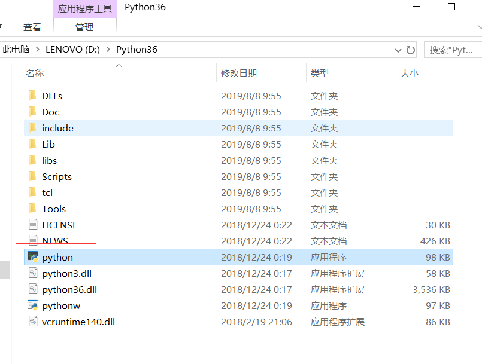

原文出处:本文由博客园博主afs2019提供。
原文连接:https://www.cnblogs.com/yyj2019/p/11319748.html
原文连接:https://www.cnblogs.com/yyj2019/p/11319748.html
1.下载步骤：
a.打开python.org，选择downloads--windows
b.选择3.6.8 64位版本，点击下载即可。
2.安装：
a.找到下载的python文件，双击开始安装。
b.选择：1.自定义安装；2.选择所有用户；3.添加python3到环境变量。
c. 勾选工具，并且下一步。
d. 1.选择安装给所有用户; 2.安装路径选择根目录。 然后开始安装，直到安装完成。

3.如果安装的时候没有选择添加python到环境变量。则需要，手动设置。步骤如下：
a.右键点击计算机---属性---高级系统设置
b.手动添加环境变量。例如：D:\Python36（此路径是python.exe文件的路径）
c.手动添加环境变量后，需要重新打开cmd。 测试成功。
4.如果windows中同时安装了python3和python2。为了方便将两者区分。需要将python执行程序更改为相应的名称。
a.如图，如果名称为python，命令行直接输入python即可。

b.手动更改名称为python36后，输入python36即可

5.建议
1.不建议安装最新版本
2.安装目录：根目录
3.推荐使用python3. python2 到2020年官网不再维护。
2019-08-08